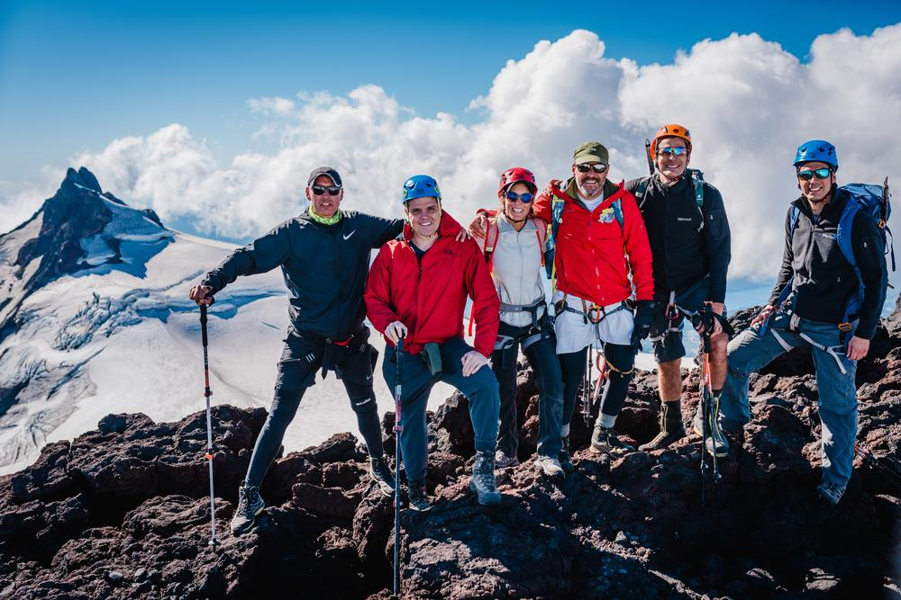

Responsible tourism ·
Global Code of Ethics for Tourism: the principles behind every outing
Born in Santiago de Chile in 1999, it now guides destinations and businesses worldwide. Here's what it is and how we apply it in the Mocho Choshuenco destination.

The Global Code of Ethics for Tourism is the reference framework of the World Tourism Organization, now UN Tourism, for responsible, sustainable and universally accessible tourism. It was adopted in Santiago de Chile in 1999 and acknowledged by the United Nations General Assembly in 2001. The World Committee on Tourism Ethics oversees its implementation.

Download poster (PDF, Spanish)
Its ten principles
- Tourism's contribution to mutual understanding and respect between peoples and cultures.
- Tourism as a vehicle for individual and collective fulfilment.
- Tourism as a factor of sustainable development.
- Care for cultural and natural heritage, which tourism should help enhance.
- Tourism as a beneficial activity for host communities.
- The obligations of tourism stakeholders: honest information and visitor safety.
- The right to tourism for everyone.
- Freedom of tourist movement.
- The rights of workers and entrepreneurs in the sector.
- Effective implementation of these principles.
What it means on our outings
- Safety and honesty: certified guides, risk-management protocols and clear information on difficulty, weather and volcanic alerts before every outing.
- Caring for the land: we apply Leave No Trace in the Mocho Choshuenco National Reserve and the protected areas where we operate under a CONAF permit.
- Local benefit: we work with local guides and destination suppliers, and respect Mapuche-Huilliche culture and communities.
- Tourism for everyone: we design adapted, inclusive experiences, such as the Tailored Inclusive Float, together with each participant, their family or carer.
- Fair work: equal fees for equal roles and training for our team.
Our commitment
Wechuntu Outdoor adheres to the 10 principles of the Global Code of Ethics for Tourism and applies them on every outing.
When you travel with us, you're part of it too: follow your guide's instructions, care for the environment and support local businesses. That's how tourism leaves a positive mark on the land.
Read the full Code on the UN Tourism website →
By Angel Delgado Cárdenas, director of Wechuntu Outdoor · ANGM Mountain Guide No. 37028